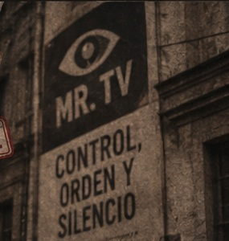

La última
clienta
Registro del caso de Clara, costurera de Recife, investigada por un régimen que persigue a quienes conservan una voz propia.
Explorar el expediente →CONFIDENCIAL
El caso Clara
Clara
Detenida- Ocupación: Costurera
- Residencia: Recife
- Señalamiento: Cantar y recibir visitas
- Vínculo investigado: Elena
Clara es denunciada por cantar. La investigación revela que Elena, esposa de Ernesto, la visita con frecuencia. Cuando Ernesto le exige confirmar lo que sabe, Elena lo niega. Intenta advertir a Clara, pero llega demasiado tarde: los hombres de Mr. TV ya se la llevaron.

Las imágenes son recreaciones visuales generadas para esta experiencia. Los documentos complementarios están identificados como expansiones ficcionales y no como documentos históricos o citas literales del cuento.
Documentos del expediente
Abrí cada archivo para leerlo. También podés descargarlo individualmente o bajar el expediente completo en PDF.
Evidencias recuperadas
Hacé clic en cualquier imagen para ampliarla. Todas son imágenes recreadas para la ficción.
Testimonios
“No la escuché cantar.”
La respuesta de Elena ante Ernesto es una mentira deliberada. Intenta proteger a Clara, aunque sabe que su marido ya sospecha de sus visitas.
Clarisse informa que Clara canta y recibe visitas en su casa.
Su denuncia convierte una práctica cotidiana en motivo de investigación para el régimen.
Cronología del caso
Clarisse denuncia que Clara canta y recibe visitas.
Ernesto descubre que Elena visita con frecuencia a Clara.
Ernesto interroga a Elena. Ella niega haber escuchado cantar a Clara.
Elena intenta advertir a Clara, pero los agentes ya se la llevaron.
Ernesto advierte a Elena que será vigilada.
Elena decide abandonar a su marido y escapar de Recife.
La cronología respeta los acontecimientos del cuento; no se agregan fechas no establecidas.
Una voz puede ser silenciada.
Una historia no tiene por qué desaparecer.
El expediente termina. La responsabilidad de recordar queda en manos de quien lo leyó.
Volver al inicio ↑